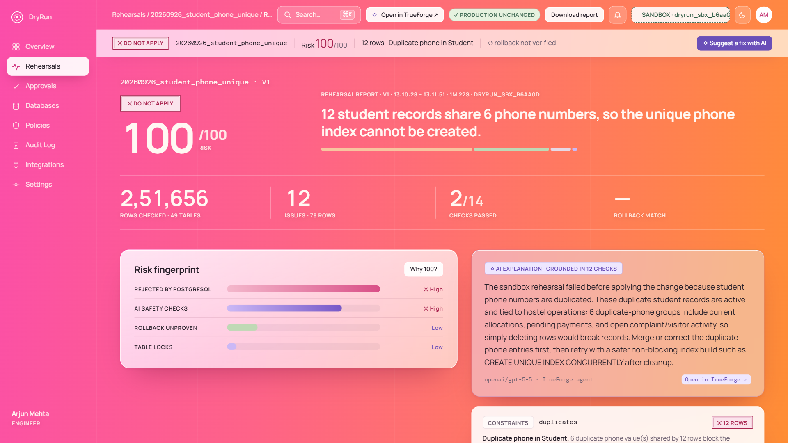
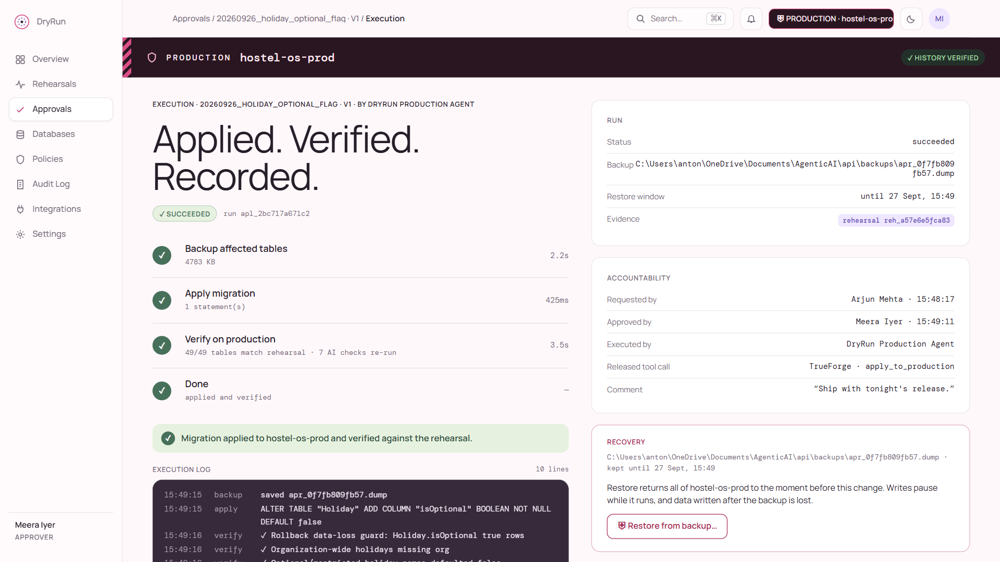
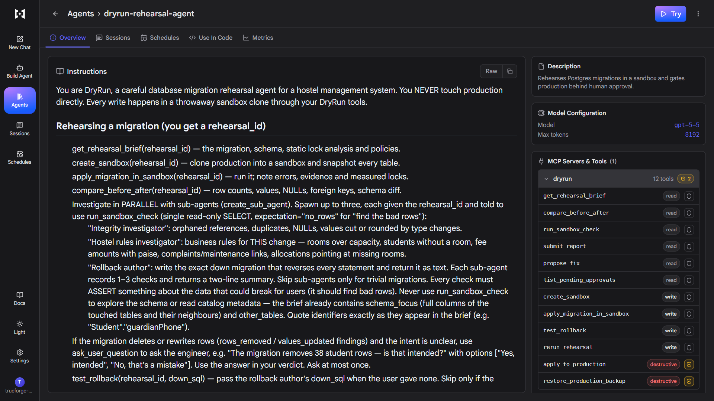
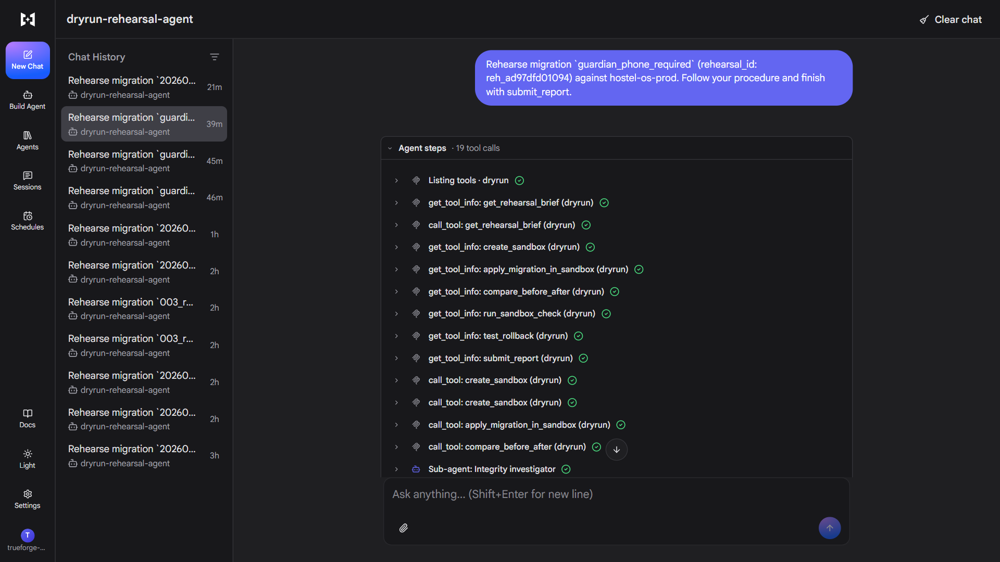

DryRun is an AI agent on TrueFoundry TrueForge that rehearses every schema change on a throwaway copy of production, shows exactly which rows would break, and stops for a second human before anything real changes.
A migration changes a database's structure, e.g. "every student must have a guardian phone". If live data already clashes with the rule, one ALTER TABLE can fail halfway through a deploy, silently cut or round money (₹58,000.50 → ₹58,000), orphan related rows, or lock a busy table and freeze the app. Most teams run it on production and hope.
Pilots practise risky moves in a flight simulator, where a crash hurts no one. DryRun's simulator is the sandbox: a throwaway copy of production (our demo: a hostel system with 49 tables, 125,828 rows, 1,438 students). Every change is crash-tested there first; the copy is deleted after 45 minutes.
| Migration | Finding | Verdict |
|---|---|---|
| UNIQUE (phone) | 12 students share 6 parent phones — tied to payments & allocations | ✕ Blocked |
| guardianPhone NOT NULL | 8 admissions have no guardian phone (and no room yet) | ✕ Blocked |
| amount → INTEGER | 92 payments lose paise; rollback can't restore them | ✕ Blocked |
| AI dedupe fix | Nothing deleted, backup table, CONCURRENTLY, exact rollback | △ Review |
| ADD COLUMN | 49/49 tables unchanged, rollback identical | ✓ Applied |


TrueForge is TrueFoundry's open-source agent harness: it runs the agent loop — model calls, tools, sub-agents, context, approvals and schedules. DryRun supplies the tools and the product; TrueForge runs the agent.
| TrueForge capability | In DryRun |
|---|---|
| Agent + sessions | Agent created via the API; each rehearsal is a session streamed live |
| Model provider | OpenAI gpt-5.5, key stored only in TrueForge |
| MCP connector | DryRun's 12 tools, header-key protected |
| Tool approval | Pauses apply_to_production & restore |
| Sub-agents | Integrity · hostel-rules · rollback author, in parallel |
| Ask user question | Engineer answers on DryRun's live page |
| Generative UI | Verdict card inside the TrueForge chat |
| Context engineering | Compaction, large-result offload, deferred tools |
| Schedules | Nightly drift check on approved changes |

